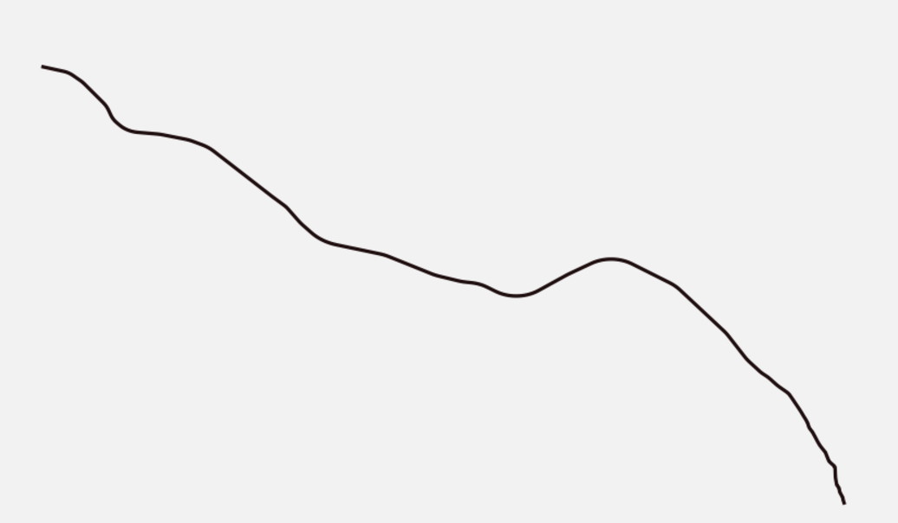
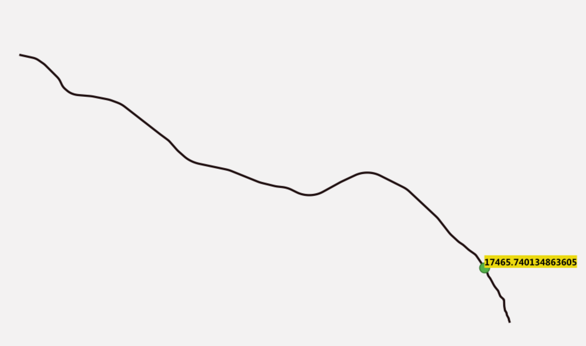
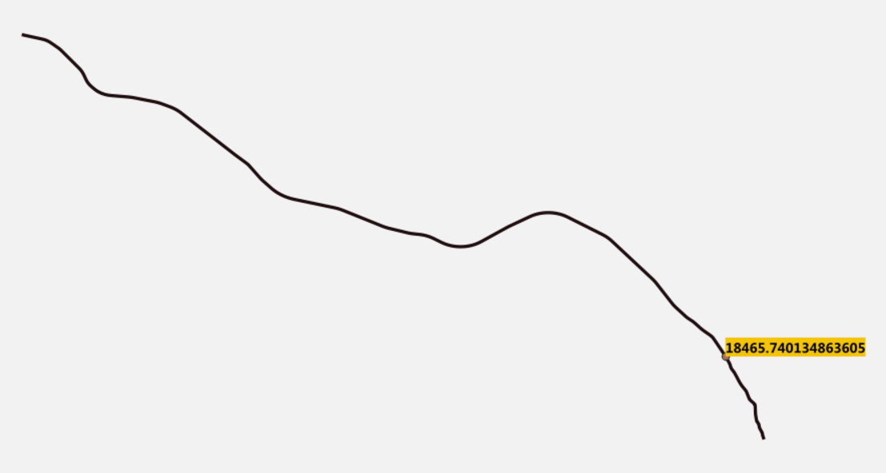

背景
在对线性参考函数进行研究的时候，一直试图找一个综合点（系统点）的使用案例。但是很可惜在我以往的工程经验里面很少有使用到此类函数的场景，更为系统的使用就更加稀少。我也思考过这个问题，这个看起很高级的用法，但是使用的人很少呢？我想无外乎就是以下几点：
- 对数据的要求，线性参考避免对一个整体的数据进行切分保证的几何的连续性。但是几何数据是由测绘部门一段一段测绘得来，本身就是分开（不连续）。所以需要使用线性参考，就需要数据部门处理成合适的数据，这需要测绘与数据生产部门积极配合，这属于第一道坎。
- 开发人员大多数时候都只是响应产品经理或者业主的需求，而本质上线性参考是一种数据结构，是一种非常巧妙的数据结构。既然是数据结构，那就对产品经理或者业主是隔离的，他们是不知道这个东西的，他们思考的时候那就依然用熟悉的方式思考，这是第二道坎。
- 对于开发人员来说，线性参考使用的较少，积累的经验是不足的，对于系统的设计也是有挑战的。所以开发人员也会倾向于不使用该方法。
案例
场景描述
用线性参考描述高速公路里程的问题。 
1、 纯几何
这种情况数据部门只提供一条几何线，所有里程全部是根据几何特性计算而来。这是最舒服的一个使用场景，完全是几何逻辑。而且计算结果和理论上的值是一样的，在这种情况是完全是没问题的。
with test_table as (select geom as line, ST_LineInterpolatePoint(geom,0.1) as point, st_length(geom::geography) as length from test_line)
select ST_InterpolatePoint(ST_AddMeasure(line,0,length),point),length/10 from test_table
-------
17465.740134863605 | 17465.740134864067

2、 半几何
这种情况数据部门提供了一条几何线的同时，也提供了起点的里程，也就是这个里程不是从0开始。这种情况也是容易处理，只需要将ST_AddMeasure函数的输入给调整一下就OK。
with test_table as (select geom as line, ST_LineInterpolatePoint(geom,0.1) as point, st_length(geom::geography) as length,ST_LineInterpolatePoint(geom,0) as point0 ,ST_LineInterpolatePoint(geom,1) as point1 from test_line)
select ST_InterpolatePoint(ST_AddMeasure(line,1000,length+1000),point),length/10,point from test_table

3、 非几何
这种情况数据部门提供了一条几何线的同时，也提供了这条线终止里程和开始里程。这里就会存在一个问题，数据部门提供了里程数据的误差是多少。这就好比要将一米赋给一条90CM的绳子，在绳子上的计算结果肯定是有误差的，而这个误差大小由开始里程与终止里程以及长度三个决定的，这个误差就不可控了。在这种情况，误差还会被总长度给平均掉，不会造成误差的叠加，还是能够接受的。
with test_table as (select geom as line, ST_LineInterpolatePoint(geom,0.1) as point, st_length(geom::geography) as length,ST_LineInterpolatePoint(geom,0) as point0 ,ST_LineInterpolatePoint(geom,1) as point1 from test_line)
select ST_InterpolatePoint(ST_AddMeasure(line,1000,length+200+1000),point),length/10,point from test_table
------------
18485.740134863605 | 17465.740134864067
4、纯业务
这种情况数据部门提供的是一条带M值的线，如果这个M值的准确的话，完全按照M值去计算还是符合业务的。但是我就遇到过这样的情况，对方提供的数据本身自带错误（误差几千米）。这就好比将1米赋给一个60里面的绳子，糟糕的是还要一直去纠结误差问题。而程序是基于数据是准确的（误差也在可接受范围），最终的计算结果差了很多也是可以能理解的。但是这个数据问题又是比较难找的，需要跨部门一个一个找过去。
with test_table as (select geom as line, ST_LineInterpolatePoint(geom,0.1) as point, st_length(geom::geography) as length,ST_LineInterpolatePoint(geom,0) as point0 ,ST_LineInterpolatePoint(geom,1) as point1 from test_line)
select ST_InterpolatePoint(line,point),length/10,point from test_table
---------
39565.59199126357 | 17465.740134864067

总结
在上面的四个场景中，第四个场景是我真实碰见过的一个场景，而其他三个场景则是我为了找出问题所在做的几个实验。在做实验过程中，我还一度认为这是postgis的bug。还好最终定位出了问题，发现不是程序问题。但是把发现的问题抛出后，别的部门又是不认的。至于里面造成的原因，可能是坐标系弄错了，也有可能是软件操作错误。这里还把多个小段合并成长线的工作量给忽略掉了，所以真实的应用场景将会更加复杂。这就是为什么我们很少看到线性参考被真实的使用。我想碰到这样的情况，开发人员估计都会放弃这种数据结构，宁肯用更加繁琐操作。写这一小节的目的也是让使用线性参考的开发人员注意所带来的非技术问题，谨慎使用这个数据结构。